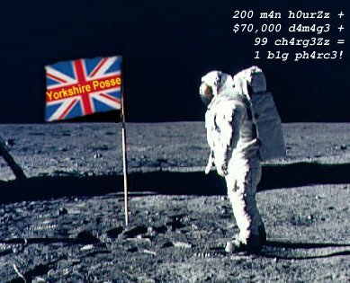
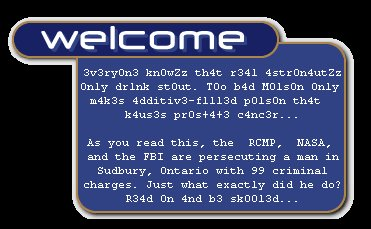

|


Brother Mandalo explains:
On April 1st, 1998, Jason Mewhiney was arrested by the RCMP for allegedly defacing the NASA web page: http://www.hq.nasa.gov. This arrest was originally attributed by the press to a 3 year investigation by the RCMP/FBI. Nothing could be further by the t
ruth. In actual truth, this arrest was the result of hearsay coming from a 20 year old paid informant by the name of Nick Potkay (whose phone # incidentally is: (203) 746-0734). It's nice that the FBI can make arrests in Canada based upon the word of a
socially inept kid such as Nicholas Potkay isn't it?
This is your wake up call, we are making a declaration of war against all who would challenge the freedom of Canadians with such ludicrous actions! We have broken into your phone companies, your breweries; everything you hold sacred! And we will contin
ue to defile corporate Canadian privacy until the bullshit agendas of the Yanks are cast aside and realized for what they are!
Let us examine for just a moment the bullshit tactics of NASA:
The hack done at Nasa was merely a change to ONE file in the html directory, index.html and NASA claims it took over 200 man hours for them to correct this situation. Are we to believe that it takes 200 hours for a team of NASA employees to reinstall one
computer and re-install the contents of that box from tape backup? These numbers are totally arbitrary. If these numbers are accurate, then it is not so difficult to imagine how a tragedy such as the Challenger explosion could occur!
Your friendly neighbourhood "rocket scientists" at NASA are obviously fabricating these numbers in order to get the FBI to pursue Jason Mewhiney. Seventy-four thousand dollars to issue a couple of commands and replace the altered page? The calculators at
NASA must have the zero key stuck or something. Seventy-four dollars perhaps, but seventy-four thousand? The painful reality is this:Jason is obviously a scapegoat for NASA's inability to secure their so called "critical" web site.
And Brother Micherob elucidates:
th3 fb1 4nd rcMp, al0ng w1th n4s4, kl41m th4t a k1d wh0 all3g3dly (ev1d3nc3 1z 3xtr3m3ly w34k) br0k3 1nt0 www.nasa.gov & ch4ng3d th31r w3bp4g3, h4z s0meh0w kAuz3d $70,000 w0rth 0f d4m4g3 & 200 h0urz 0f l0st m4n-t1m3 (t0 r3-1nst4ll a d1g1t4l un1x m4ch1n3)
.
pAus3 f()r a s3k0nd & l3tZ k0ns1d3r th1s.. n4s4 h4z 1n t0t4l 100z 0f th0u$4ndz 0f m4ch1n3zZ. 1ph th1z kl41m 0f 200 h0Urz 0f m4n t1m3 1z 3v3n r3m0t3lY r34l1$t1k, th1z w0Uld m34n n4sa h4z b33n 1nst4ll1ng b0x3z s1nc3 th3 1c3 4g3.
l3tz ex4m1n3 th1Z sUm 0f $70,000.. 1n 0rd3r t0 r3st0r3 th3 p4g3, n4s4 d1d:
# mv index.html.bak index.html
(1t wUz b4ck3d uP by th3 'm4l1c10us 4nd 3v1l h4ck3r-tYp3' wh0 d1d 1t) 1ph th4t c0st $70,000 1t'z n0 w0nd3r th3 U.S. d3f1c1t 1z s0 hUg3.m4yb3 th3y sh0Uld ex4m1n3 th31r 3xp3nd1tUr3z 4 l1ttl3 m0r3 cl0Z3ly.. sUm1 sh0uld a$k th3m h0w mUch 1t k0zT u.s. t4xyp4y
3rz t0 flY RCMP p30pl3 d0wn, h4v3 th3m st4Y 1n h0t3lz & att3nd s3m1n4rz, h0w mUch th1$ tr14l 1z c0st1ng t0 b0th am3r1c4nz & k4n4d1aNz, 3tc., 3tc.. th3n s1t b4k & w4tch th3m 4tt3mpt t0 jU$t1fY th1s c1rcU$.
Finally, some parting words from Brother Mandabarb:
And so we come to an end of our diatribe. I hope you have enjoyed our spectacle. Remember -- in the future, question what your read. But most of all, phear -- For the Yorkshire Posse hath arrived.
|